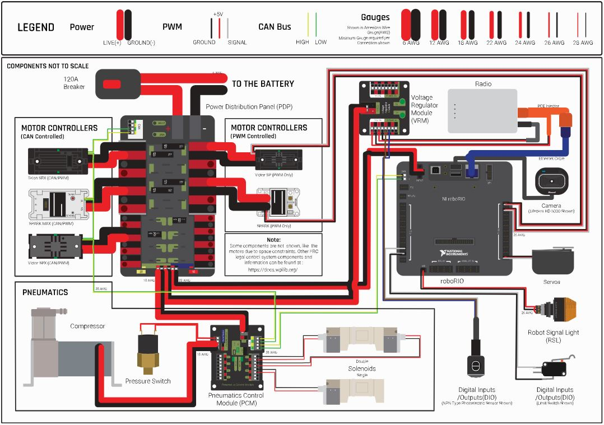

The electrical department is responsible for the wiring of the robot
as well as all of the electronic components on the robot with the
exception of motors (this is done by
).
Electrical’s main task during build season is to create the electrical
board which is then mounted to the robot. The electrical board is a
panel containing all of the main electrical components of the robot
including the RoboRIO, the PDP, and the PCM.
The following image is a map of the components and connections of a
somewhat standard electrical board.

RoboRIO: The roboRIO is the “brains” of the robot. It stores
and runs the code on the robot and communicates with the radio and
PDP to control the motors and get input from the driver’s station.
Power Distribution Panel (PDP): The PDP regulates the power usage
of the robot and distributes power from the battery to the various
components. The PDP provides a total of 16 output pairs from which the
motor controllers and thus the motors themselves receive power.
Pneumatics Control Module (PCM): The PCM receives signals from
the roboRIO and controls the pneumatic solenoids on the robot.
Voltage Regulator Module (VRM): The VRM provides and regulates
power from the PDP to the radio, vision cameras, and custom circuits.
Motor Controllers: Motor controllers such as the Talon SRX or
Spark Max use control data from the roboRIO and power from the PDP to
produce variable voltage for the motors.
Radio: The radio provides two way communication between the
robot and the driver’s station or field via WiFi. The radio receives
power from the VRM and is connected to the roboRIO via ethernet.
Main Circuit Breaker: The 120A Main Circuit Breaker is a
key component of a robot because it serves as both an on/off switch
as well as a breaker to protect other components.
Robot Signal Light (RSL): The RSL is a required component of
all FRC robots. It serves as an indicator of whether the robot is on
and whether it is enabled. While the robot is powered off the RSL is
off, while the robot is powered on but is dissabled the RSL remains
on, and while the robot is enabled the RSL blinks.